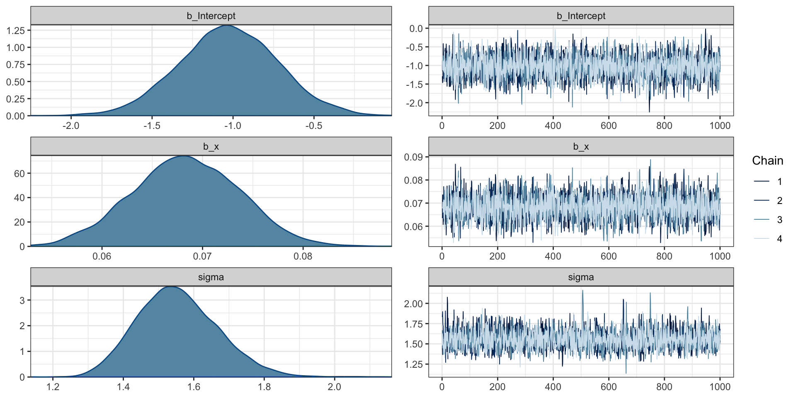
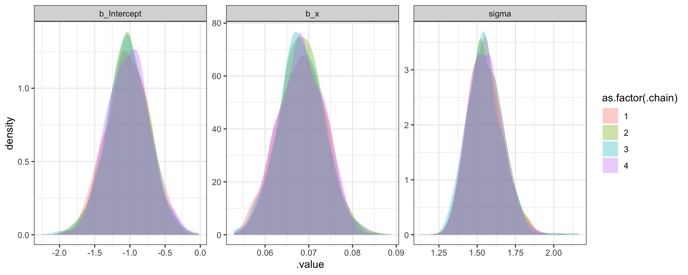
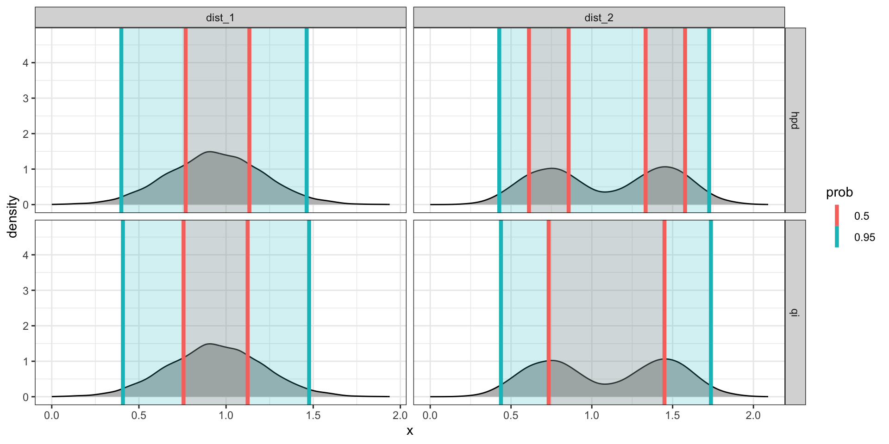
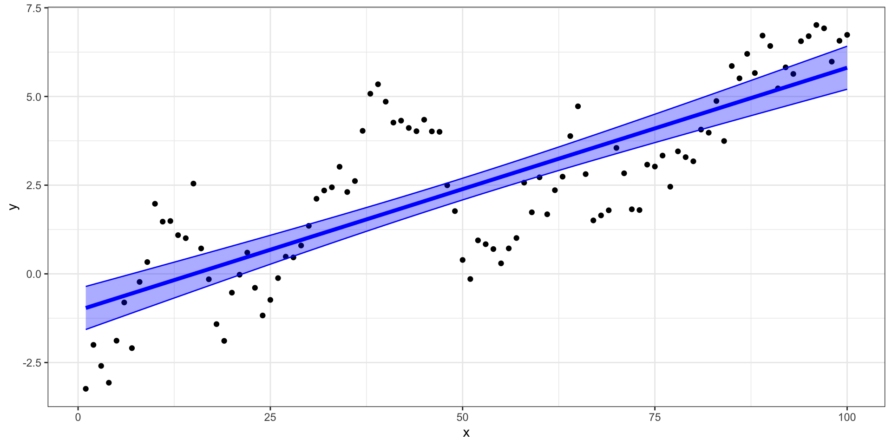
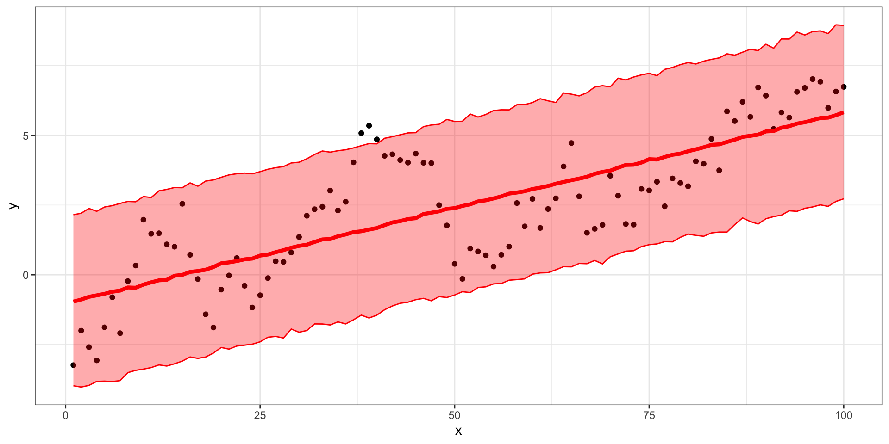
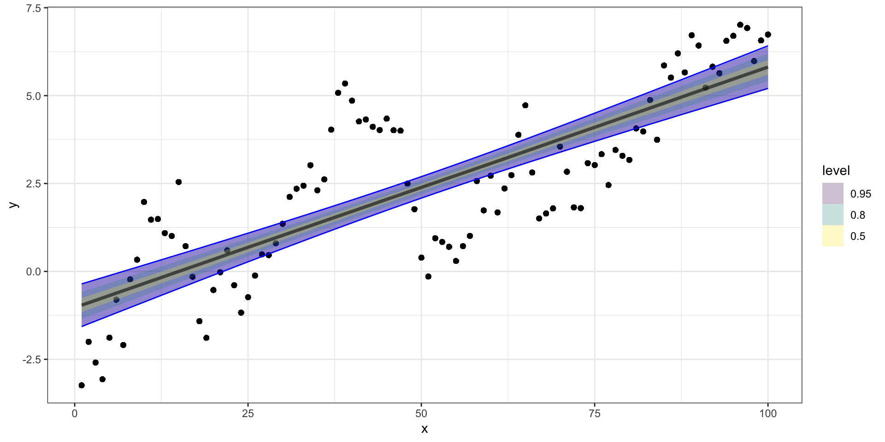
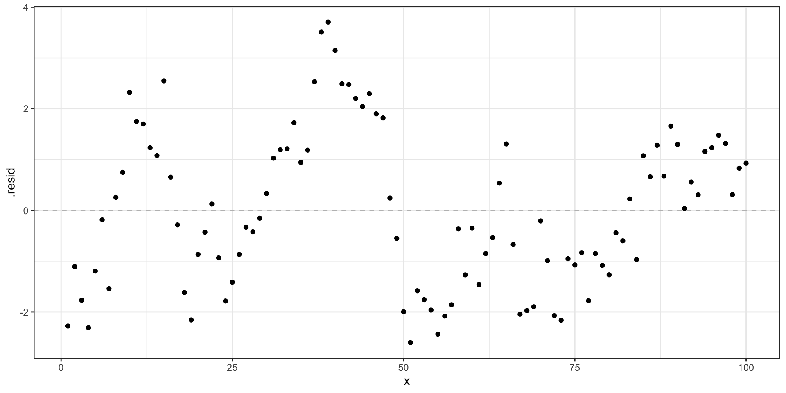
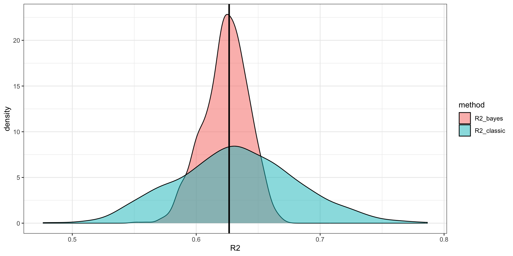
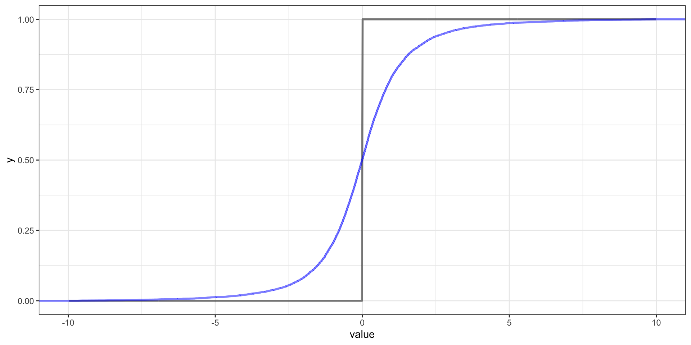

Diagnostics and
Model Evaluation
Lecture 03
Dr. Colin Rundel
Some more linear models
Linear model and data
Linear model
l = lm(y ~ x, data=d)
summary(l)
##
## Call:
## lm(formula = y ~ x, data = d)
##
## Residuals:
## Min 1Q Median 3Q Max
## -2.6041 -1.2142 -0.1973 1.1969 3.7072
##
## Coefficients:
## Estimate Std. Error t value Pr(>|t|)
## (Intercept) -1.030315 0.310326 -3.32 0.00126 **
## x 0.068409 0.005335 12.82 < 2e-16 ***
## ---
## Signif. codes: 0 '***' 0.001 '**' 0.01 '*' 0.05 '.' 0.1 ' ' 1
##
## Residual standard error: 1.54 on 98 degrees of freedom
## Multiple R-squared: 0.6266, Adjusted R-squared: 0.6227
## F-statistic: 164.4 on 1 and 98 DF, p-value: < 2.2e-16Bayesian model (brms)
( b = brms::brm(
y ~ x, data=d,
prior = c(
brms::prior(normal(0, 100), class = Intercept),
brms::prior(normal(0, 10), class = b),
brms::prior(cauchy(0, 2), class = sigma)
),
silent = 2, refresh = 0
)
)
## Running /opt/homebrew/Cellar/r/4.2.1_2/lib/R/bin/R CMD SHLIB foo.c
## clang -I"/opt/homebrew/Cellar/r/4.2.1_2/lib/R/include" -DNDEBUG -I"/Users/rundel/Library/R/arm64/4.2/library/Rcpp/include/" -I"/Users/rundel/Library/R/arm64/4.2/library/RcppEigen/include/" -I"/Users/rundel/Library/R/arm64/4.2/library/RcppEigen/include/unsupported" -I"/Users/rundel/Library/R/arm64/4.2/library/BH/include" -I"/Users/rundel/Library/R/arm64/4.2/library/StanHeaders/include/src/" -I"/Users/rundel/Library/R/arm64/4.2/library/StanHeaders/include/" -I"/Users/rundel/Library/R/arm64/4.2/library/RcppParallel/include/" -I"/Users/rundel/Library/R/arm64/4.2/library/rstan/include" -DEIGEN_NO_DEBUG -DBOOST_DISABLE_ASSERTS -DBOOST_PENDING_INTEGER_LOG2_HPP -DSTAN_THREADS -DBOOST_NO_AUTO_PTR -include '/Users/rundel/Library/R/arm64/4.2/library/StanHeaders/include/stan/math/prim/mat/fun/Eigen.hpp' -D_REENTRANT -DRCPP_PARALLEL_USE_TBB=1 -I/opt/homebrew/opt/gettext/include -I/opt/homebrew/opt/readline/include -I/opt/homebrew/opt/xz/include -I/opt/homebrew/include -fPIC -Wno-implicit-function-declaration -c foo.c -o foo.o
## In file included from <built-in>:1:
## In file included from /Users/rundel/Library/R/arm64/4.2/library/StanHeaders/include/stan/math/prim/mat/fun/Eigen.hpp:13:
## In file included from /Users/rundel/Library/R/arm64/4.2/library/RcppEigen/include/Eigen/Dense:1:
## In file included from /Users/rundel/Library/R/arm64/4.2/library/RcppEigen/include/Eigen/Core:88:
## /Users/rundel/Library/R/arm64/4.2/library/RcppEigen/include/Eigen/src/Core/util/Macros.h:628:1: error: unknown type name 'namespace'
## namespace Eigen {
## ^
## /Users/rundel/Library/R/arm64/4.2/library/RcppEigen/include/Eigen/src/Core/util/Macros.h:628:16: error: expected ';' after top level declarator
## namespace Eigen {
## ^
## ;
## In file included from <built-in>:1:
## In file included from /Users/rundel/Library/R/arm64/4.2/library/StanHeaders/include/stan/math/prim/mat/fun/Eigen.hpp:13:
## In file included from /Users/rundel/Library/R/arm64/4.2/library/RcppEigen/include/Eigen/Dense:1:
## /Users/rundel/Library/R/arm64/4.2/library/RcppEigen/include/Eigen/Core:96:10: fatal error: 'complex' file not found
## #include <complex>
## ^~~~~~~~~
## 3 errors generated.
## make: *** [foo.o] Error 1
## Family: gaussian
## Links: mu = identity; sigma = identity
## Formula: y ~ x
## Data: d (Number of observations: 100)
## Draws: 4 chains, each with iter = 2000; warmup = 1000; thin = 1;
## total post-warmup draws = 4000
##
## Population-Level Effects:
## Estimate Est.Error l-95% CI u-95% CI Rhat Bulk_ESS Tail_ESS
## Intercept -1.03 0.31 -1.63 -0.43 1.00 4431 2639
## x 0.07 0.01 0.06 0.08 1.00 5244 2691
##
## Family Specific Parameters:
## Estimate Est.Error l-95% CI u-95% CI Rhat Bulk_ESS Tail_ESS
## sigma 1.55 0.11 1.36 1.78 1.00 3287 2616
##
## Draws were sampled using sampling(NUTS). For each parameter, Bulk_ESS
## and Tail_ESS are effective sample size measures, and Rhat is the potential
## scale reduction factor on split chains (at convergence, Rhat = 1).Parameter estimates
tidybayes - gather_draws (long)
b_post = b |>
tidybayes::gather_draws(b_Intercept, b_x, sigma)
b_post
## # A tibble: 12,000 × 5
## # Groups: .variable [3]
## .chain .iteration .draw .variable .value
## <int> <int> <int> <chr> <dbl>
## 1 1 1 1 b_Intercept -0.961
## 2 1 2 2 b_Intercept -1.24
## 3 1 3 3 b_Intercept -1.29
## 4 1 4 4 b_Intercept -0.763
## 5 1 5 5 b_Intercept -0.980
## 6 1 6 6 b_Intercept -1.13
## 7 1 7 7 b_Intercept -0.810
## 8 1 8 8 b_Intercept -1.33
## 9 1 9 9 b_Intercept -1.22
## 10 1 10 10 b_Intercept -1.11
## # … with 11,990 more rowstidybayes - spread_draws (wide)
b_post_wide = b |>
tidybayes::spread_draws(b_Intercept, b_x, sigma)
b_post_wide
## # A tibble: 4,000 × 6
## .chain .iteration .draw b_Intercept b_x sigma
## <int> <int> <int> <dbl> <dbl> <dbl>
## 1 1 1 1 -0.961 0.0671 1.33
## 2 1 2 2 -1.24 0.0726 1.75
## 3 1 3 3 -1.29 0.0736 1.79
## 4 1 4 4 -0.763 0.0639 1.35
## 5 1 5 5 -0.980 0.0697 1.53
## 6 1 6 6 -1.13 0.0692 1.53
## 7 1 7 7 -0.810 0.0637 1.52
## 8 1 8 8 -1.33 0.0726 1.47
## 9 1 9 9 -1.22 0.0728 1.65
## 10 1 10 10 -1.11 0.0667 1.52
## # … with 3,990 more rowsPosterior plots
Trace plots
Credible Intervals
( b_ci = b_post |>
group_by(.chain, .variable) |>
tidybayes::mean_hdi(.value, .width=c(0.8, 0.95))
)
## # A tibble: 24 × 8
## .chain .variable .value .lower .upper .width .point .interval
## <int> <chr> <dbl> <dbl> <dbl> <dbl> <chr> <chr>
## 1 1 b_Intercept -1.03 -1.40 -0.624 0.8 mean hdi
## 2 1 b_x 0.0685 0.0624 0.0761 0.8 mean hdi
## 3 1 sigma 1.55 1.40 1.69 0.8 mean hdi
## 4 2 b_Intercept -1.03 -1.41 -0.621 0.8 mean hdi
## 5 2 b_x 0.0684 0.0620 0.0753 0.8 mean hdi
## 6 2 sigma 1.55 1.43 1.69 0.8 mean hdi
## 7 3 b_Intercept -1.02 -1.40 -0.604 0.8 mean hdi
## 8 3 b_x 0.0684 0.0615 0.0749 0.8 mean hdi
## 9 3 sigma 1.55 1.42 1.69 0.8 mean hdi
## 10 4 b_Intercept -1.04 -1.40 -0.637 0.8 mean hdi
## # … with 14 more rowsAside - mean_qi() vs mean_hdi()
These differ in the use of the quantile interval vs. the highest-density interval.
Caterpillar Plots
Predictions
lm predictions
(l_pred = broom::augment(l, interval="confidence"))
## # A tibble: 100 × 10
## y x .fitted .lower .upper .resid .hat .sigma .cooksd .std.resid
## <dbl> <int> <dbl> <dbl> <dbl> <dbl> <dbl> <dbl> <dbl> <dbl>
## 1 -3.24 1 -0.962 -1.57 -0.355 -2.28 0.0394 1.53 0.0467 -1.51
## 2 -2.00 2 -0.893 -1.49 -0.296 -1.11 0.0382 1.54 0.0107 -0.734
## 3 -2.59 3 -0.825 -1.41 -0.237 -1.77 0.0371 1.54 0.0264 -1.17
## 4 -3.07 4 -0.757 -1.34 -0.177 -2.31 0.0359 1.53 0.0436 -1.53
## 5 -1.88 5 -0.688 -1.26 -0.118 -1.20 0.0348 1.54 0.0113 -0.791
## 6 -0.807 6 -0.620 -1.18 -0.0583 -0.187 0.0338 1.55 0.000266 -0.123
## 7 -2.09 7 -0.551 -1.10 0.00127 -1.54 0.0327 1.54 0.0175 -1.02
## 8 -0.227 8 -0.483 -1.03 0.0609 0.256 0.0317 1.55 0.000466 0.169
## 9 0.333 9 -0.415 -0.950 0.121 0.747 0.0307 1.55 0.00384 0.493
## 10 1.98 10 -0.346 -0.873 0.180 2.32 0.0297 1.53 0.0358 1.53
## # … with 90 more rowsConfidence interval
brms predictions
(b_pred = predict(b))
## Estimate Est.Error Q2.5 Q97.5
## [1,] -0.96419044 1.553634 -4.04028547 2.124732
## [2,] -0.89721849 1.593799 -3.96603496 2.179769
## [3,] -0.79179315 1.594565 -3.96413800 2.391643
## [4,] -0.73859326 1.579550 -3.83546564 2.266440
## [5,] -0.68293418 1.579669 -3.79089154 2.460559
## [6,] -0.61155250 1.609090 -3.81348198 2.516711
## [7,] -0.56675460 1.579506 -3.66369377 2.479165
## [8,] -0.45334581 1.570071 -3.47909432 2.620280
## [9,] -0.47151098 1.565524 -3.49855796 2.580172
## [10,] -0.35537333 1.552547 -3.30957100 2.739897
## [11,] -0.26908970 1.562577 -3.30266874 2.745822
## [12,] -0.20382232 1.582830 -3.19318502 2.973233
## [13,] -0.18236463 1.568774 -3.25612849 3.056613
## [14,] -0.03840721 1.571181 -3.10470573 3.032293
## [15,] -0.00652744 1.572307 -3.12245894 3.008274
## [16,] 0.10287639 1.572319 -3.00472461 3.249254
## [17,] 0.13118291 1.551076 -2.95438203 3.215593
## [18,] 0.17851264 1.584728 -2.98651983 3.299391
## [19,] 0.27050750 1.563454 -2.87319847 3.363364
## [20,] 0.41283775 1.573038 -2.66079563 3.530289
## [21,] 0.44184881 1.555286 -2.56097614 3.577824
## [22,] 0.49217845 1.563060 -2.59018856 3.618380
## [23,] 0.55265549 1.569987 -2.55004713 3.696949
## [24,] 0.58250043 1.566227 -2.46261938 3.659840
## [25,] 0.68590865 1.572495 -2.40520333 3.683899
## [26,] 0.72963017 1.543954 -2.23608029 3.789787
## [27,] 0.81039564 1.558351 -2.20547662 3.841632
## [28,] 0.88280296 1.553211 -2.21481596 3.889175
## [29,] 0.96859814 1.545373 -2.01290488 3.995431
## [30,] 1.03721604 1.553376 -2.09335175 4.076215
## [31,] 1.08407921 1.547029 -1.87896160 4.168488
## [32,] 1.17290777 1.565596 -1.83976815 4.310560
## [33,] 1.26850017 1.565206 -1.73367094 4.384727
## [34,] 1.28279024 1.560946 -1.75673259 4.393507
## [35,] 1.38357784 1.540426 -1.59904748 4.397953
## [36,] 1.44710794 1.578714 -1.71632818 4.442580
## [37,] 1.53174657 1.569852 -1.58157999 4.546611
## [38,] 1.56547981 1.558802 -1.48783191 4.584533
## [39,] 1.62184547 1.607951 -1.57322312 4.750295
## [40,] 1.67600652 1.563986 -1.43433051 4.706720
## [41,] 1.77823618 1.565591 -1.32955716 4.852990
## [42,] 1.87565665 1.543720 -1.11319802 4.864384
## [43,] 1.92136023 1.536899 -1.07187048 5.065492
## [44,] 1.99608460 1.547342 -0.99295043 5.116418
## [45,] 2.03431203 1.527837 -0.92298442 5.079693
## [46,] 2.17601221 1.540681 -0.75118929 5.292158
## [47,] 2.22583634 1.578335 -0.92872466 5.402889
## [48,] 2.27637390 1.537809 -0.78925532 5.400552
## [49,] 2.36065179 1.590575 -0.80086408 5.518619
## [50,] 2.39429735 1.569579 -0.68372725 5.444640
## [51,] 2.47232834 1.586458 -0.68805088 5.552497
## [52,] 2.52157332 1.598191 -0.69885170 5.669854
## [53,] 2.62977657 1.563467 -0.38517877 5.644701
## [54,] 2.67094685 1.568177 -0.40028556 5.694188
## [55,] 2.73663758 1.564255 -0.35934672 5.859088
## [56,] 2.80989166 1.557385 -0.28249546 5.906563
## [57,] 2.91005675 1.583946 -0.18362586 5.972365
## [58,] 2.95733547 1.555786 -0.06794048 6.019356
## [59,] 2.99627646 1.572688 -0.17323347 6.095180
## [60,] 3.07966257 1.589372 -0.00439586 6.242303
## [61,] 3.12656037 1.600794 0.06930962 6.345764
## [62,] 3.18498011 1.554808 0.16128793 6.206373
## [63,] 3.27165021 1.550771 0.18797397 6.298690
## [64,] 3.32927738 1.572493 0.28464113 6.545312
## [65,] 3.39355294 1.582995 0.31559142 6.443889
## [66,] 3.45409957 1.532763 0.43493476 6.405158
## [67,] 3.52064847 1.573354 0.38997121 6.555478
## [68,] 3.62602785 1.588982 0.58327197 6.697734
## [69,] 3.69378150 1.613452 0.47427503 6.802541
## [70,] 3.73362593 1.571077 0.66092402 6.755425
## [71,] 3.84334287 1.588937 0.79286368 6.964876
## [72,] 3.93962741 1.560438 0.87969769 6.977364
## [73,] 3.94629114 1.567417 0.83751669 7.068538
## [74,] 4.02382853 1.576824 0.94269246 7.183349
## [75,] 4.14212124 1.572508 1.08811598 7.218009
## [76,] 4.14183389 1.546520 1.15590239 7.226831
## [77,] 4.22485737 1.559249 1.22303133 7.255037
## [78,] 4.30730427 1.576806 1.22050671 7.408303
## [79,] 4.34446826 1.528154 1.37028014 7.454586
## [80,] 4.43593391 1.581751 1.38209803 7.572422
## [81,] 4.49717279 1.579947 1.42682090 7.619767
## [82,] 4.57308158 1.557224 1.41422283 7.609957
## [83,] 4.66299731 1.586878 1.51600868 7.662505
## [84,] 4.68078297 1.571286 1.56934250 7.789015
## [85,] 4.76934980 1.603489 1.63894211 7.877330
## [86,] 4.84961212 1.578855 1.84134540 7.945473
## [87,] 4.94564757 1.541860 1.96273553 8.019691
## [88,] 4.99167332 1.572537 1.92861675 8.033702
## [89,] 5.02422454 1.596433 1.91953291 8.079916
## [90,] 5.14588414 1.606303 1.95928451 8.304882
## [91,] 5.16011533 1.566905 2.07553352 8.230494
## [92,] 5.27612394 1.590560 2.14222744 8.438877
## [93,] 5.33182633 1.576197 2.28943018 8.460920
## [94,] 5.42198182 1.620632 2.28758680 8.652370
## [95,] 5.47389922 1.589344 2.33761040 8.593094
## [96,] 5.54751511 1.594631 2.39575175 8.728021
## [97,] 5.62311878 1.575677 2.54298645 8.683638
## [98,] 5.63624251 1.599526 2.53240302 8.687367
## [99,] 5.72299151 1.586211 2.56923647 8.886604
## [100,] 5.83129479 1.570594 2.78270719 8.901418Credible interval
Why are the intervals different?
Raw predictions
Tidy raw predictions
( b_post_pred = tidybayes::predicted_draws(
b, newdata=d
) )
## # A tibble: 400,000 × 7
## # Groups: x, y, .row [100]
## x y .row .chain .iteration .draw .prediction
## <int> <dbl> <int> <int> <int> <int> <dbl>
## 1 1 -3.24 1 NA NA 1 3.24
## 2 1 -3.24 1 NA NA 2 -3.86
## 3 1 -3.24 1 NA NA 3 -1.36
## 4 1 -3.24 1 NA NA 4 0.465
## 5 1 -3.24 1 NA NA 5 -2.54
## 6 1 -3.24 1 NA NA 6 -6.98
## 7 1 -3.24 1 NA NA 7 -2.07
## 8 1 -3.24 1 NA NA 8 -2.97
## 9 1 -3.24 1 NA NA 9 -0.408
## 10 1 -3.24 1 NA NA 10 -0.465
## # … with 399,990 more rows( b_post_epred = tidybayes::epred_draws(
b, newdata=d
) )
## # A tibble: 400,000 × 7
## # Groups: x, y, .row [100]
## x y .row .chain .iteration .draw .epred
## <int> <dbl> <int> <int> <int> <int> <dbl>
## 1 1 -3.24 1 NA NA 1 -0.894
## 2 1 -3.24 1 NA NA 2 -1.17
## 3 1 -3.24 1 NA NA 3 -1.21
## 4 1 -3.24 1 NA NA 4 -0.699
## 5 1 -3.24 1 NA NA 5 -0.910
## 6 1 -3.24 1 NA NA 6 -1.06
## 7 1 -3.24 1 NA NA 7 -0.746
## 8 1 -3.24 1 NA NA 8 -1.26
## 9 1 -3.24 1 NA NA 9 -1.15
## 10 1 -3.24 1 NA NA 10 -1.05
## # … with 399,990 more rowsPosterior predictions vs Expected posterior predictions

Credible intervals

Posterior predictive checks
Residuals - lm
Residual posteriors - brms
Model Evaluation
Model assessment
If we remember back to our first regression class, one common option is \(R^2\) which gives us the variability in \(y\) explained by our model.
Quick review:
\[ \underset{\text{Total}}{\sum_{i=1}^n \left(y_i - \bar{y}\right)^2} = \underset{\text{Model}}{\sum_{i=1}^n \left(\hat{y}_i - \bar{y}\right)^2} + \underset{\text{Error }}{\sum_{i=1}^n \left(y_i - \hat{y}_i\right)^2} \]
\[ R^2 = \frac{SS_{model}}{SS_{total}} = \frac{\sum_{i=1}^n \left(\hat{Y}_i - \bar{Y}\right)^2}{\sum_{i=1}^n \left(Y_i - \bar{Y}\right)^2} = \frac{\text{Var}(\hat{\boldsymbol{Y}}) }{ \text{Var}({\boldsymbol{Y}}) } = \text{Cor}(\boldsymbol{Y}, \hat{\boldsymbol{Y}})^2 \]
Some data prep
( b_post_full = b |>
tidybayes::spread_draws(b_Intercept, b_x, sigma) |>
tidyr::expand_grid(d) |>
mutate(
y_hat = b_Intercept + b_x * x,
resid = y - y_hat
)
)
## # A tibble: 400,000 × 10
## .chain .iteration .draw b_Intercept b_x sigma x y y_hat resid
## <int> <int> <int> <dbl> <dbl> <dbl> <int> <dbl> <dbl> <dbl>
## 1 1 1 1 -0.961 0.0671 1.33 1 -3.24 -0.894 -2.35
## 2 1 1 1 -0.961 0.0671 1.33 2 -2.00 -0.826 -1.18
## 3 1 1 1 -0.961 0.0671 1.33 3 -2.59 -0.759 -1.84
## 4 1 1 1 -0.961 0.0671 1.33 4 -3.07 -0.692 -2.38
## 5 1 1 1 -0.961 0.0671 1.33 5 -1.88 -0.625 -1.26
## 6 1 1 1 -0.961 0.0671 1.33 6 -0.807 -0.558 -0.248
## 7 1 1 1 -0.961 0.0671 1.33 7 -2.09 -0.491 -1.60
## 8 1 1 1 -0.961 0.0671 1.33 8 -0.227 -0.424 0.197
## 9 1 1 1 -0.961 0.0671 1.33 9 0.333 -0.357 0.690
## 10 1 1 1 -0.961 0.0671 1.33 10 1.98 -0.290 2.27
## # … with 399,990 more rowsBayesian \(R^2\)
When we compute any statistic for our model we want to do so at each iteration so that we can obtain the posterior distribution of that particular statistic (e.g. the posterior distribution of \(R^2\) in this case).
( b_R2 = b_post_full %>%
group_by(.iteration) %>%
summarize(
R2_classic = var(y_hat) / var(y),
R2_bayes = var(y_hat) / (var(y_hat) + var(resid))
)
)
## # A tibble: 1,000 × 3
## .iteration R2_classic R2_bayes
## <int> <dbl> <dbl>
## 1 1 0.676 0.642
## 2 2 0.757 0.663
## 3 3 0.593 0.610
## 4 4 0.667 0.637
## 5 5 0.630 0.625
## 6 6 0.627 0.624
## 7 7 0.557 0.593
## 8 8 0.640 0.625
## 9 9 0.730 0.657
## 10 10 0.558 0.594
## # … with 990 more rowsUh oh …
Sanity check
( l_pred = broom::augment(l) )
## # A tibble: 100 × 8
## y x .fitted .resid .hat .sigma .cooksd .std.resid
## <dbl> <int> <dbl> <dbl> <dbl> <dbl> <dbl> <dbl>
## 1 -3.24 1 -0.962 -2.28 0.0394 1.53 0.0467 -1.51
## 2 -2.00 2 -0.893 -1.11 0.0382 1.54 0.0107 -0.734
## 3 -2.59 3 -0.825 -1.77 0.0371 1.54 0.0264 -1.17
## 4 -3.07 4 -0.757 -2.31 0.0359 1.53 0.0436 -1.53
## 5 -1.88 5 -0.688 -1.20 0.0348 1.54 0.0113 -0.791
## 6 -0.807 6 -0.620 -0.187 0.0338 1.55 0.000266 -0.123
## 7 -2.09 7 -0.551 -1.54 0.0327 1.54 0.0175 -1.02
## 8 -0.227 8 -0.483 0.256 0.0317 1.55 0.000466 0.169
## 9 0.333 9 -0.415 0.747 0.0307 1.55 0.00384 0.493
## 10 1.98 10 -0.346 2.32 0.0297 1.53 0.0358 1.53
## # … with 90 more rowsWhat if we collapsed first?
Here we calculate the posterior mean of \(\hat{y}\) and use that to estimate \(R^2\),
Some problems with \(R^2\)
Some new issues,
\(R^2\) doesn’t really make sense in the Bayesian context
multiple possible definitions with different properties
fundamental equality doesn’t hold anymore
Possible to have \(R^2 > 1\)
Some old issues,
\(R^2\) always increases (or stays the same) when adding a predictor
\(R^2\) is highly susceptible to over fitting
\(R^2\) is sensitive to outliers
\(R^2\) depends heavily on values of \(y\) (can differ for two equivalent models)
Some Other Metrics
Root Mean Square Error
The traditional definition of rmse is as follows
\[ \text{RMSE} = \sqrt{ \frac{1}{n} \sum_{i=1}^n \left(y_i - \hat{y_i} \right)^2 } \]
In the bayesian context, we have posterior samples from each parameter / prediction of interest so we can express this as
\[ \frac{1}{m} \sum_{s=1}^{m} \sqrt{ \frac{1}{n} \sum_{i=1}^n \left(y_i - {\hat{y}}_{i,s} \right)^2 } \]
where \(m\) is the number of iterations and \(\hat{Y}^s_i\) is the prediction for \(Y_i\) at iteration \(s\).
Continuous Rank Probability Score
Another approach is the continuous rank probability score which comes from the probabilistic forecasting literature, it compares the full posterior predictive distribution to the observation / truth.
\[ \text{CRPS} = \int_{-\infty}^\infty \left(F_{\hat{y}}(z) - {1}_{z \geq y}\right)^2 dz \]
where \(F_{\hat{y}}\) is the CDF of \(\hat{y}\) (the posterior predictive distribution for \(y\)) and \({1}_{z \geq Y}\) is an indicator function which equals 1 when \(z \geq y\), the true/observed value of \(y\).
Since this calculates a score for a single probabilistic prediction we can naturally extend it to multiple predictions by calculating an average CRPS \[ \frac{1}{n} \sum_{i=1}^n \int_{-\infty}^\infty \left(F_{\hat{y}_i}(z) - {1}_{z \geq y_i}\right)^2 dz \]
CDF vs Indicator
Empirical CDF vs Indicator
Accuracy vs. Precision
Empirical Coverage
One final method, which assesses model calibration is to examine how well credible intervals, derived from the posterior predictive distributions of the \(y\)s, capture the true/observed values.

Back to our example
RMSE - \(\hat{y}\)
broom::augment(l) |>
yardstick::rmse(y, .fitted)
## # A tibble: 1 × 3
## .metric .estimator .estimate
## <chr> <chr> <dbl>
## 1 rmse standard 1.52
( b_rmse = b_post_full %>%
group_by(.chain, .iteration) %>%
summarize(
rmse = sqrt( sum( (y - y_hat)^2 ) / n())
)
)
## # A tibble: 4,000 × 3
## # Groups: .chain [4]
## .chain .iteration rmse
## <int> <int> <dbl>
## 1 1 1 1.53
## 2 1 2 1.53
## 3 1 3 1.53
## 4 1 4 1.53
## 5 1 5 1.53
## 6 1 6 1.53
## 7 1 7 1.53
## 8 1 8 1.53
## 9 1 9 1.53
## 10 1 10 1.53
## # … with 3,990 more rowsRMSE - \(\hat{y}\) - Results
CRPS - \(\hat{y}\)
( b_crps = b_post_full |>
group_by(.chain, x) |>
summarise(
crps = calc_crps(y_hat, y)
)
)
## # A tibble: 400 × 3
## # Groups: .chain [4]
## .chain x crps
## <int> <int> <dbl>
## 1 1 1 2.10
## 2 1 2 0.934
## 3 1 3 1.60
## 4 1 4 2.14
## 5 1 5 1.03
## 6 1 6 0.113
## 7 1 7 1.38
## 8 1 8 0.156
## 9 1 9 0.599
## 10 1 10 2.18
## # … with 390 more rowsEmpirical Coverage - \(\hat{y}\)
( b_cover = b_post_full %>%
group_by(x, y) %>%
tidybayes::mean_hdi(
y_hat, .prob = c(0.5,0.9,0.95)
)
)
## # A tibble: 300 × 8
## x y y_hat .lower .upper .width .point .interval
## <int> <dbl> <dbl> <dbl> <dbl> <dbl> <chr> <chr>
## 1 1 -3.24 -0.963 -1.14 -0.735 0.5 mean hdi
## 2 2 -2.00 -0.894 -1.07 -0.669 0.5 mean hdi
## 3 3 -2.59 -0.826 -1.02 -0.630 0.5 mean hdi
## 4 4 -3.07 -0.758 -0.947 -0.562 0.5 mean hdi
## 5 5 -1.88 -0.689 -0.847 -0.467 0.5 mean hdi
## 6 6 -0.807 -0.621 -0.771 -0.398 0.5 mean hdi
## 7 7 -2.09 -0.552 -0.745 -0.378 0.5 mean hdi
## 8 8 -0.227 -0.484 -0.667 -0.306 0.5 mean hdi
## 9 9 0.333 -0.415 -0.594 -0.240 0.5 mean hdi
## 10 10 1.98 -0.347 -0.521 -0.174 0.5 mean hdi
## # … with 290 more rowsEmpirical Coverage - \(\hat{y}\) - Results
What went wrong now?
Sta 344 - Fall 2022